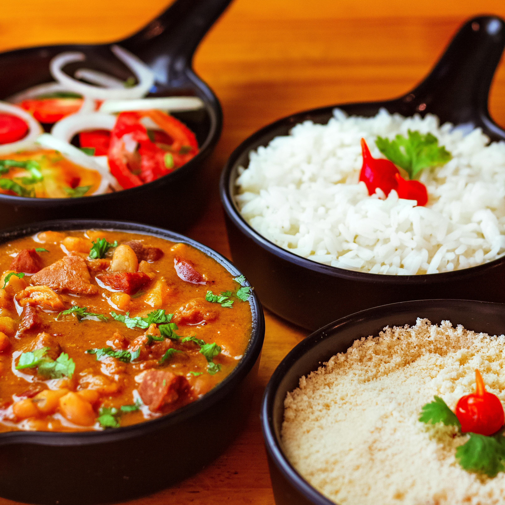

Super Club: a complete dining and unforgettable experience
Discover a super club where every dish tells a story, every note sings a song, and every moment is a feast for your senses.
Super Club: a complete dining and unforgettable experience
Private Dining: Private chef services for your special party
Special Events: Take potiguar flavour to your event
Learn with us: A hands-on cooking experience class
- Lina, Stefanie
Ready to embark on a culinary and cultural journey?
Discover the vibrant flavors, captivating rhythms, and rich artistry of Northeast Brazil.